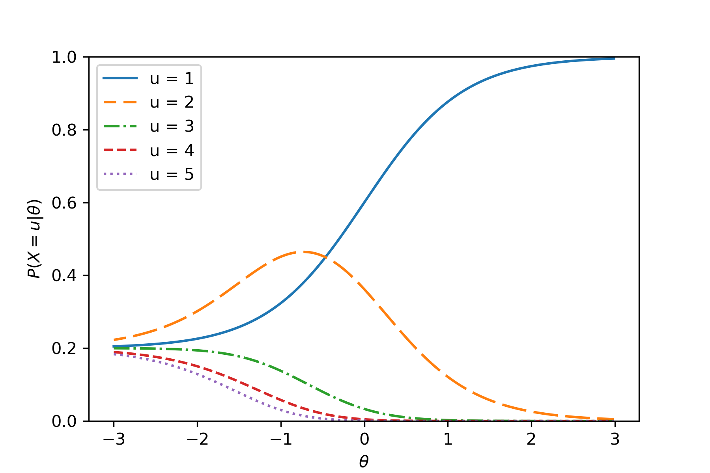

01
Statistical Modeling of Innovative Item Types
Models and adaptive testing methods for assessments that capture richer response behavior, including multiple-choice, multiple-attempt items.
Examples: sequential item response models and adaptive testing for multiple-attempt items.
